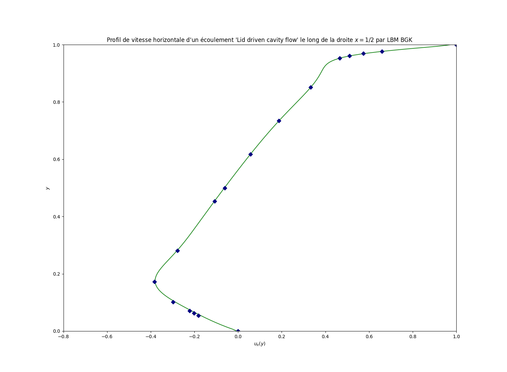

Implementation of an incompressible Navier-Stokes model
Objective of this 4th tutorial
The objective is to start from a kernel which simulates an Advection-Diffusion Equation and modify it to simulate a Navier-Stokes model for single-phase applications. The verifications will be done with the classic test case of “lid driven cavity flow”.
1. Create a new kernel NS
Create a new kernel NS
You can refer to Tuto 1 & 2 where all commands have been presented in detail:
Copy the kernel
ADE_for_NSand rename itNavier-Stokes_Tutorialin directoryLBM_Saclay_Rech-Dev/src/kernels/Go to your new folder
Navier-Stokes_Tutorialand replace all files with extension_ADEby_NSEdit your files and replace
_ADEwith_NSIn file
Setup.hreplace the problem nameADEbyNSCreate your
Makefilewith option-DPROBLEM=Navier-Stokes_Tutorialand compile
2. Modifications inside each file of NS
enum ComponentIndex
In
enum ComponentIndex, add a new indexIDfor density \(\rho\)
Solution
enum ComponentIndex { IU , /*!< X velocity / momentum index */ IV , /*!< Y velocity / momentum index */ IW , /*!< Z velocity / momentum index */ IC , /*!< Phase field index */ ID , COMPONENT_SIZE /*!< invalid index, just counting number of fields */ };
struct index2names
In
struct index2names, add a new stringrhoto write the density \(\rho\) in the output file
Solution
// insert some fields map[IC ] = "comp"; map[IU ] = "vx"; map[IV ] = "vy"; map[IW ] = "vz"; map[ID ] = "rho"; return map;
Read and declare Navier-Stokes parameters in ModelParams
The Navier-Stokes equations involve two main input parameters: the kinematic viscosity \(\nu\) and the initial density \(\rho\). A new flag flow is also introduced to simulate or not the Navier-Stokes model. If flow=0.0 then the ADE is simulated, else if flow=1.0 then the NS model is simulated.
Read and declare the Navier-Stokes parameters in
ModelParams
Solution
Read parameters in input file:
flow = configMap.getFloat("params", "flow" , 0.0); nu = configMap.getFloat("params", "nu" , 1.0); rho_init = configMap.getFloat("init" , "rho_init", 1.0);
Declare them as
real_tat the end ofModelParams
Solution
real_t flow, nu, rho_init;
Add specific functions for Navier-Stokes
Add a new function
tau_NSfor relaxation rate \(\tau_{NS}\)
Solution
tau_NS// ======================================================= // relaxation rate for kinematic viscosity KOKKOS_INLINE_FUNCTION real_t tau_NS(EquationTag1 tag, const LBMState &lbmState) const { real_t tau = 0.5 + (e2 * nu * dt / SQR(dx)); return (tau); }
Function setup_collider with BGK
The function setup_collider is adapted for ADE. It must be compteled to simulate Navier-Stokes equations.
Add a new block
if-else iffor flagflow=0.0andflow=1.0and move the ADEsetup_colliderinside the first condition.
Solution
LBMState lbmState; Base::template setupLBMState2<LBMState, COMPONENT_SIZE>(IJK, lbmState); if (Model.flow == 0.0) { const real_t M0 = Model.MomentM0(tag, lbmState); const RVect<dim> uc = Model.MomentM1<dim>(tag, lbmState); const real_t M2 = Model.MomentM2(tag, lbmState); // compute collision rate collider.tau = Model.tau(tag, lbmState); // ipop = 0 collider.f[0] = Base::get_f_val(tag, IJK, 0); collider.S0[0] = 0.0 ; collider.feq[0] = w[0]*M0; // ipop > 0 for (int ipop = 1; ipop < npop; ++ipop) { collider.f[ipop] = this->get_f_val(tag, IJK, ipop); collider.S0[ipop] = 0.0 ; collider.feq[ipop] = w[ipop] * (M2 + c_cs2 * Base::compute_scal(ipop, uc)); } } else if (Model.flow == 1.0) { }
Complete the
else ifpart with the NSsetup_collider
Solution
else if (Model.flow == 1.0) { FState GAMMA; const real_t rho = lbmState[ID] ; collider.tau = Model.tau_NS(tag, lbmState); real_t scalUU = SQR(lbmState[IU]) + SQR(lbmState[IV]); for (int ipop = 0; ipop < npop; ++ipop) { real_t scalUC = c * Base::compute_scal(ipop, lbmState[IU], lbmState[IV]); GAMMA[ipop] = e2*scalUC/c2 + 0.5*SQR(e2*scalUC)/SQR(c2) - 0.5*e2*scalUU/c2; collider.feq[ipop] = rho * w[ipop] * (1.0 + GAMMA[ipop]); collider.f[ipop] = Base::get_f_val(tag, IJK, ipop); collider.S0[ipop] = 0.0 ; } }
Function make_boundary with BGK
The function make_boundary is adapted for ADE. It must be compteled for Navier-Stokes boundary conditions.
Add a new block
if-else iffor flagflow=0.0andflow=1.0and move the ADEsetup_colliderinside the first condition.
Solution
const real_t dx = this->params.dx; const real_t dt = this->params.dt; const real_t c = dx / dt; const real_t c_cs2 = Model.e2 / (c * Model.rho_init); // ADE boundary if (Model.flow == 0.0) { if (Base::params.boundary_types[BOUNDARY_EQUATION_1][faceId] == BC_ANTI_BOUNCE_BACK) { real_t boundary_value = Base::params.boundary_values[BOUNDARY_PHASE_FIELD][faceId]; for (int ipop = 0; ipop < npop; ++ipop) this->compute_boundary_antibounceback(tagC, faceId, IJK, ipop, boundary_value); } else if (Base::params.boundary_types[BOUNDARY_EQUATION_1][faceId] == BC_ZERO_FLUX) { for (int ipop = 0; ipop < npop; ++ipop) this->compute_boundary_bounceback(tagC, faceId, IJK, ipop, 0.0); } } // NS boundary else if (Model.flow == 1.0) { }
Complete the
else ifpart with three boundary conditions for Navier-Stokes (pressure, no-slip and velocity)
Solution
else if (Model.flow == 1.0) { // Pressure imposed if (Base::params.boundary_types[BOUNDARY_EQUATION_1][faceId] == BC_ANTI_BOUNCE_BACK) { real_t boundary_value = this->params.boundary_values[BOUNDARY_PRESSURE][faceId]; for (int ipop = 0; ipop < npop; ++ipop) { this->compute_boundary_antibounceback(tagC, faceId, IJK, ipop, boundary_value); } } // No-slip boundary condition else if (Base::params.boundary_types[BOUNDARY_EQUATION_1][faceId] == BC_ZERO_FLUX) { for (int ipop = 0; ipop < npop; ++ipop) this->compute_boundary_bounceback(tagC, faceId, IJK, ipop, 0.0); } // Velocity imposed (e.g. for test case of lid driven cavity flow) else if (Base::params.boundary_types[BOUNDARY_EQUATION_1][faceId] == BC_BOUNCEBACK) { real_t boundary_vx = this->params.boundary_values[BOUNDARY_VELOCITY_X][faceId]; real_t boundary_vy = this->params.boundary_values[BOUNDARY_VELOCITY_Y][faceId]; real_t value; for (int ipop = 0; ipop < npop; ++ipop) { value = c_cs2 * this->compute_scal_Ebar(ipop, boundary_vx, boundary_vy); this->compute_boundary_bounceback(tagC, faceId, IJK, ipop, value); } } }
Function init_macro with BGK
The function init_macro is adapted for ADE. It must be compteled for Navier-Stokes initial condition.
Add a new block
if-else iffor flagflow=0.0andflow=1.0and move the ADE initialization inside the first condition.
Solution
real_t x, y; this->get_coordinates(IJK, x, y); if (Model.flow == 0.0) { real_t c = 0.0; real_t xphi = 0.0; real_t vx = 0.0; real_t vy = 0.0; if (Model.initType == ADE_GAUSSIAN) { c = Model.ampl * exp( - ( SQR(x-Model.x0) / (2 * SQR(Model.sigmax)) + SQR(y-Model.y0) / (2 * SQR(Model.sigmay)) )) ; vx = Model.initVX; vy = Model.initVY; } this->set_lbm_val(IJK, IC, c); this->set_lbm_val(IJK, IU, vx); this->set_lbm_val(IJK, IV, vy); } else if (Model.flow == 1.0) { }
Complete the
else ifpart withrho_initand null velocity and save in array with appropriate indices
Solution
else if (Model.flow == 1.0) { real_t rho = Model.rho_init; real_t vx = Model.initVX ; real_t vy = Model.initVY ; this->set_lbm_val(IJK, ID, rho); this->set_lbm_val(IJK, IU, vx); this->set_lbm_val(IJK, IV, vy); }
Function update_macro with BGK
The function update_macro is adapted for ADE. It must be compteled for Navier-Stokes.
Add a new block
if-else iffor flagflow=0.0andflow=1.0and move the ADE initialization inside the first condition.
Solution
// get local coordinates real_t x, y; this->get_coordinates(IJK, x, y); if (Model.flow == 0.0) { // compute moments of distribution equations real_t moment_c = 0.0; for (int ipop = 0; ipop < npop; ++ipop) { moment_c += Base::get_f_val(tagC, IJK, ipop); } // store old values of macro fields LBMState lbmStatePrev; // get source terms and compute new macro fields const real_t c = moment_c; const real_t vx = Model.initVX; const real_t vy = Model.initVY; // update macro fields this->set_lbm_val(IJK, IC , c ); this->set_lbm_val(IJK, IU , vx ); this->set_lbm_val(IJK, IV , vy ); } else if (Model.flow == 1.0) { }
Complete the
else ifpart for \(\rho,u_x,u_y\) and save in array with appropriate indices
Solution
else if (Model.flow == 1.0) { const real_t dt = Model.dt; const real_t dx = Model.dx; const real_t c = dx/dt ; // compute moments of distribution equations real_t moment_rho = 0.0; real_t moment_VX = 0.0; real_t moment_VY = 0.0; for (int ipop = 0; ipop < npop; ++ipop) { moment_rho += Base::get_f_val(tagC, IJK, ipop); moment_VX += Base::get_f_val(tagC, IJK, ipop) * E[ipop][IX] * c ; moment_VY += Base::get_f_val(tagC, IJK, ipop) * E[ipop][IY] * c ; } // Save with appropriate indices const real_t rho = moment_rho; const real_t vx = moment_VX / rho ; const real_t vy = moment_VY / rho ; this->set_lbm_val(IJK, ID , rho); this->set_lbm_val(IJK, IU , vx ); this->set_lbm_val(IJK, IV , vy ); }
3. Verification of your implementation
The test case of validation is the “lid driven cavity flow”. The input file is Tuto04_NS_Cavity-flow-Re1000.ini in the directory run_training_lbm/Tutorial04_Navier-Stokes.
Run and post-process your results
Go to the appropriate folder and run LBM_Saclay
$ cd LBM_Saclay_Rech-Dev/run_training_lbm/Tutorial04_Navier-Stokes $ ../../build_NS/src/LBM_saclay Tuto04_NS_Cavity-flow-Re1000.ini
Once the computation is complete, extract from your final
.vtifile one profile \(u_x\) as a function of \(y\) with paraview 5.12
$ path_to_pvpython/pvpython Extract-Profile_Ux-y_Re1000.pvpyThe output is a
.csvfile calledProfile_LBM_Cavity_BGK_1000_Ux.csv.
Compare with the analytical solution written in the python script
Compare_Ghia_Profile_Ux-y_Re1000.py
$ python Compare_Ghia_Profile_Ux-y_Re1000.pyYou must obtain Fig Fig. 48
{kind=link}

Fig. 48 Comparison between LBM and Ghia et al. reference solution
Section author: Alain Cartalade